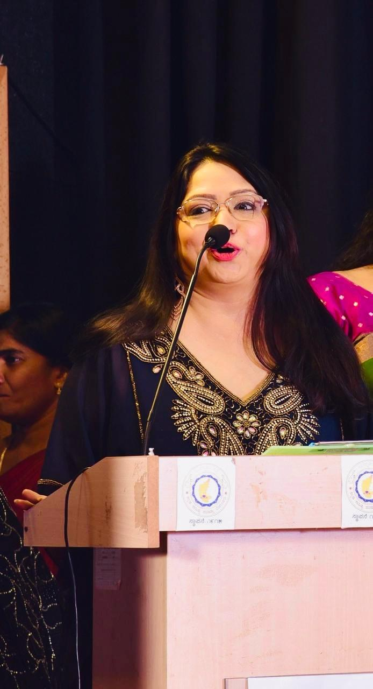

Managing Director’s Vision
Leadership for me has always been Anchored in Composure and Ownership. Every chapter of my Professional Journey has Strengthened One Belief that Credibility is earned through Consistent Action, Transparent Intent, and Results that speak. When I decided to Create Simmra Aveera, my mindset was clear that I intend to bring Strategic Insight, Tech-Led Systems, and Operational Excellence to convert every Opportunity into Disciplined Execution.
Simra Ruhhi Strategy & Setu, Our Executive Consulting and Advisory Unit, which serves as a Catalyst for Transformation. We Partner with Founders, Corporate Leadership, and Enterprises to fortify Organizational Capability, enhance Digital Excellence, and drive Consistent Growth.
Nimma Setu, Our Flagship EdTech Initiative, conceptualized to strengthen Academic Ecosystems across South India. Built on a Relentlessly Student-First Culture, this Endeavour provides Integrated Foundation Courses from 6th to 10th Grade Students, and Advanced Coaching for IIT-JEE, NEET, K-CET, COMEDK, and various Olympiads. Through our Sahayogi Partnership Model, we collaborate with Schools, Colleges, and Sahayogi Franchises to deliver Scholarly Expertise, Structured Mentorship, and Technology-Enabled Learning.
My approach is defined by a simple principle, inherited from my Father and my Tayaji (Sardar Late Atal Bahadur Singh) — Honesty is Non-Negotiable.
Best Regards,
Ruhhi Siingh
Managing Director Simmra Aveera Private Limited